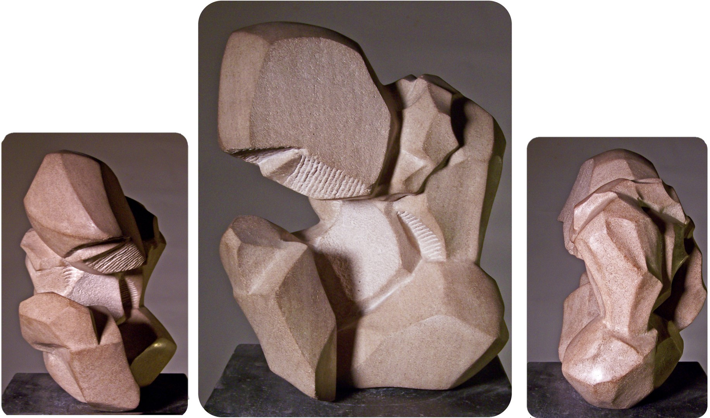
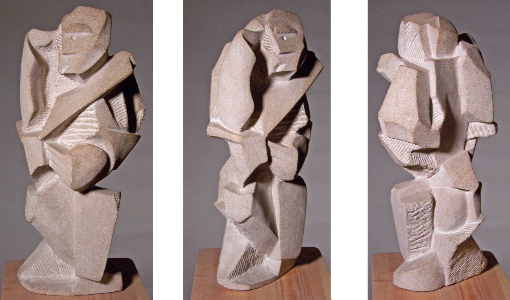

The works shown below represent groups, for example men of color, service people like soldiers, and mothers, particularly of the mothers of young black boys, who often times are disproportionately subject to inequities in society.

Sometimes the weight of the burdens on individuals is clearly visible, much like the observable density and mass of stone material.
Transformation due to time & pressure
Two of the stone materials that I use for carving are limestone (a sedimentary class of rock) and marble (a metamorphic class of rock). Both kinds of these stones are
formed overtime, resulting from materials subjected to heat and presure over time. Marble actually begins as limestone, before being subject to the changing process, referred to as metamorphism.
I wonder about the transformation that will result overtime, if the ongoing weight due to the illusion of race (an artificial social constuct), and disproportionalities arising from both explicit and implicit biases weigh down and shape individuals, communities, and all people who regardless of outlook are interlinked as one common humanity.

Richard Diaz
Subject, form, and content are the core parts that make up all works of art. A work's Subject expresses "WHAT" the piece of art is about, for example its image, focus, or topic. In the case of Form, the "HOW" about the artwork's visual composition or material construction tends to be evident. Finally, Content is the insight "WHY", or the deep motivation, meaning and intention behind an artwork, which may be elusive at times to immediately take away. My hope is for the context shared above to facilitate connections to insight beneath the surface of each work.